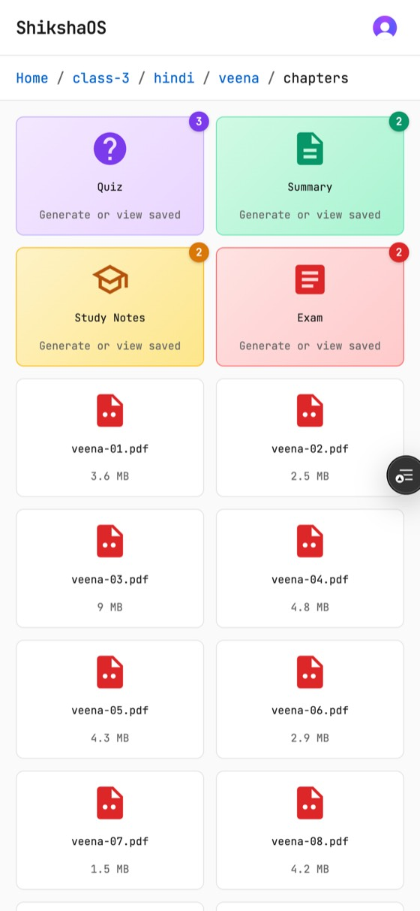
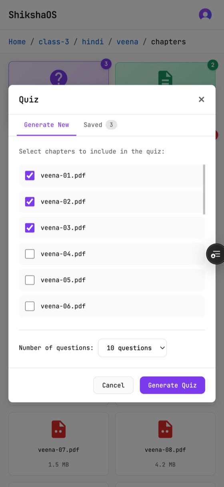
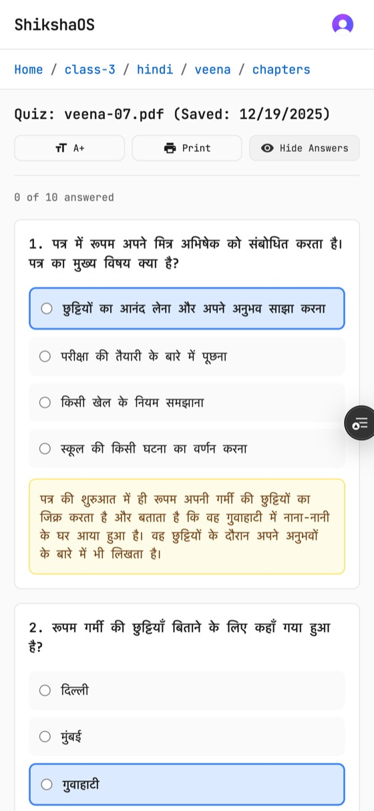
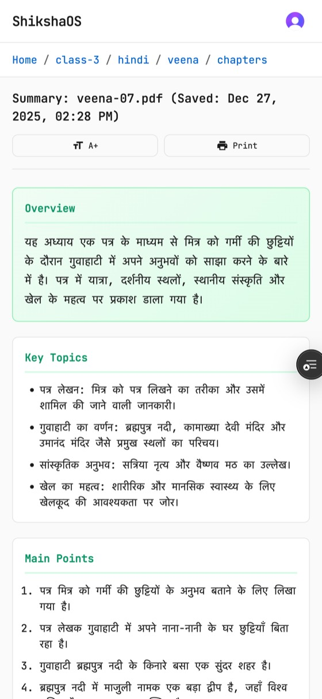
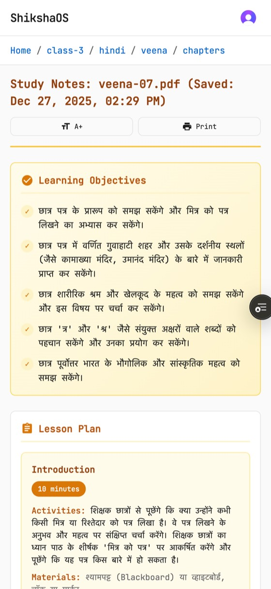
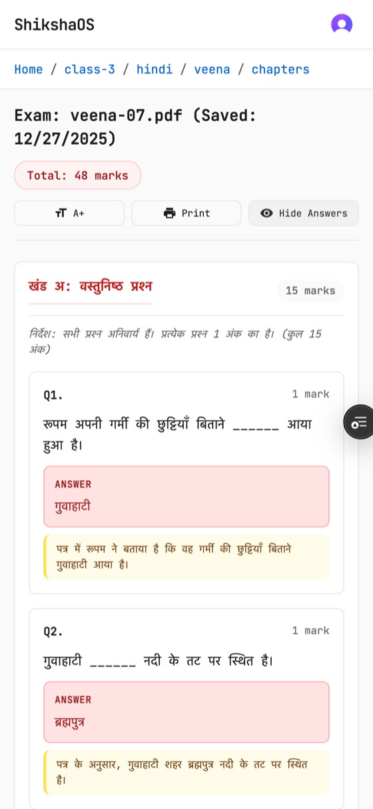

QuizzesExam papersChapter summariesLesson plansAny textbook language
01The problem
Prep work eats the evening.
A teacher who wants a ten-question quiz for tomorrow writes it by hand tonight. So does
the teacher in the next classroom, and the one in the next school, from the same chapter
of the same book.
Setting an exam paper is worse: sections, marks that add up, a spread of question types,
and an answer key — an evening's work for a single test.
For teachers working in Indian languages the shortcut doesn't exist. Ready-made question
banks and worksheets are written in English, for a different syllabus. And general AI
tools don't help much either: they don't know which textbook is on the desk, and asked in
English they answer in English — leaving the teacher to translate their way back to a
Hindi classroom.
The work is real, repetitive, and almost identical across thousands of classrooms. That
is exactly the kind of work software should be doing.
02What it does
Four things a teacher needs, from the chapter they're already teaching.
Open the textbook you teach from, pick a chapter, choose what you need. No prompt writing,
no setup, no uploading — the books are already there.
Quiz Generator
Practice · any chapter
A practice quiz from any chapter, ready to hand out.
Choose one chapter or several; set how many questions.
Interactive on screen with instant scoring, or print it.
Save it and it's there next year.
Exam Builder
Sections A/B/C · 25–100 marks
A full exam paper with sections, marks and an answer key.
Sections A, B and C, totalling 25, 50, 75 or 100 marks.
Six question types, from fill-in-the-blanks to long answer.
Answers stay hidden until you reveal them — hand the paper out, keep the key.
Chapter Summaries
One chapter at a time
The chapter, condensed to what students must carry away.
Overview, key topics, main points, important terms, key takeaways.
Useful as a revision handout or your own five-minute refresher.
One chapter at a time, so nothing gets blurred together.
Study Notes & Lesson Plans
A guide for the period
A teaching guide for the period, not just content.
Learning objectives and a phased lesson plan.
Teaching tips and discussion questions for the room.
Classroom activities you can run with what you have.
03In the app
One chapter, six screens.
A teacher opens the book they're already teaching from, picks a chapter, and walks out
with material in the language the class is taught in.

Browse — class, subject, book, chapters

Pick chapters — one or several

Quiz — answers and explanations

Summary — overview and key topics

Study notes — objectives and lesson plan

Exam — sections, marks, answer key
Real screens from the running product, with sample school content.
04Language
A Hindi textbook gives you a Hindi quiz.
Not a setting. Not a translation step. ShikshaOS reads the chapter, recognises the script
it is written in, and works in that language from start to finish.
The quiz, the exam paper, the summary, the lesson plan — question text, options, answers,
instructions, all of it comes back in the language the class is taught in.
A teacher never picks a language, because the book already answered that question. A
Devanagari chapter produces Hindi. Change the book and the output changes with it — this
is the difference between a tool built for Indian classrooms and a tool translated for them.
Pick a chapter
Script detected from the chapter · output language follows the book
Sample output — the live product generates from your school's own textbooks.
05For schools
The unglamorous parts, done properly.
A tool teachers rely on before class has to behave like infrastructure: predictable,
private, and fast on the second visit.
2
Roles
Administrator and teacher.
4
Caches
Between a click and a paid API call.
0
Servers
To patch or keep awake.
Private
By default
Every teacher's work is their own.
Your teachers' content stays theirs
Everything a teacher creates is saved to their own private space. Other teachers can't
see it, can't open it, can't stumble into it. Administrators publish to a shared library
that everyone can use — sharing is a decision, never an accident.
Costs stay predictable
Usage limits are set per role, per day and per month. When a teacher's main allowance
runs out they move to a lighter tier and keep working instead of hitting a wall. A
school knows its ceiling before the bill arrives.
Fast on the second visit
Chapters are read once and remembered, so the same textbook doesn't get re-processed
for every teacher who opens it. Repeated work is served from memory in a fraction of a
second.
Access that's actually checked
Every request is authenticated before anything is read or written, and each one is
checked against who is asking — not just at the front door, but again at the file.
Teachers sign in with their school account.
Degrades gracefully
If a supporting service is unavailable the app keeps working — it simply loses the
speed-up rather than the function. Nothing in the path is a single point of failure for
the teacher standing in front of a class.
06How it works
Four steps, about a minute.
No prompt writing, no uploading, no settings to learn. The books are already on the shelf.
STEP 01
Browse the textbook
Your school's books are already in the shelf: class, subject, book, chapters.
STEP 02
Pick chapters
Tick the chapters you're teaching, then choose quiz, exam, summary or lesson plan.
STEP 03
Generate in the book's language
The chapter is read, its script recognised, and the material written in that language.
STEP 04
Print, save, reuse
Use it on screen or on paper. Saved work stays in your space for next term.
07Under the hood
One request, end to end.
For the technical reader in the room: what actually happens when a teacher clicks Generate.
07aArchitecture
A static client, serverless functions, and four caches standing between a click and a
paid API call.
A teacher clicks Generate in the static client.
The request travels to a serverless function as a signed token over HTTPS.
Identity is verified, with a 30-second cache in front of it.
A rate-limit gate checks the teacher's allowance, falling back to an extended tier.
The chapter list is read, cached for 60 seconds.
The chapter text is extracted, cached for 7 days.
The chapter's script is analysed and fixes the output language.
Generation runs, with identical requests reused for 10 minutes.
The finished material is returned to the client.
Four caches
Between a click and a paid API call.
Costs stay predictable
By design, not by watching the bill.
Teachers' content stays theirs
Shared library and private space are separate.
07bDeployment
Push to deploy. No build step, no servers, nothing to keep awake between classes.
A push to one branch deploys everything; there is no build step.
The static app is served from a global edge network.
The API runs as serverless functions that scale to zero.
Identity, caching, storage and the language model are managed services.
The result is live with no servers to patch.
No servers to patch
Managed platform, managed services.
Scales to zero
An idle school costs nothing to keep running.
Config by environment
The same code ships everywhere.
Degrades gracefully
Cache layer down, app still works.
Even this page ships the same way — static, fast, no backend.
08Get in touch
Bring it to your school.
ShikshaOS is running today. If you run a school, a teacher-training programme, or an
education non-profit — we'd like to put it in front of your teachers and hear what breaks.
Request a demo — a walkthrough with your own textbooks.
Run a pilot — one class, one term, one honest verdict.
Just curious — questions from developers and educators are welcome.